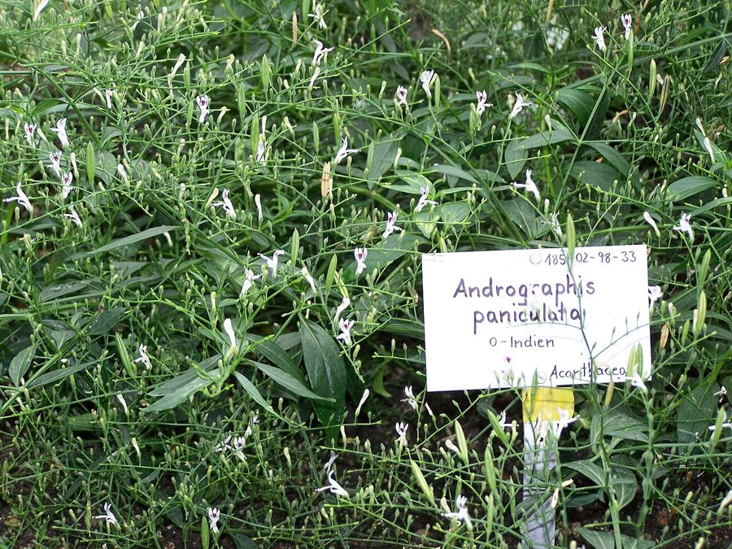

कालमेघKalmegh
Andrographis paniculata · Acanthaceae · FLR-0084

- Scientific name
- Andrographis paniculata (Burm. fil.) Nees
- Family
- Acanthaceae
- Hindi
- कालमेघ
- Status here
- native
- IUCN
- not evaluated
When to look कब देखें
Expected mainly in September, October, November, December, January, February.
कालमेघ / Kalmegh
Andrographis paniculata (Burm. fil.) Nees — Acanthaceae
कालमेघ (भूनिम्ब / चिरायता / किंग ऑफ बिटर्स) — पूर्वी उत्तर प्रदेश में गांव के बागों, खेतों की मेड़ों, रास्तों के किनारे छांवदार नम स्थानों और जंगलों के अंदर उगने वाला एक छोटा, सीधा, और अत्यंत गुणकारी शाकीय वार्षिक पौधा (slender annual herb) है। इसकी ऊंचाई लगभग 30 से 90 सेमी होती है। इसका स्वाद इतना तीखा और कड़वा होता है कि इसे वैश्विक स्तर पर 'कड़वाहट का राजा' (King of Bitters) कहा जाता है। इसकी सबसे बड़ी पहचान इसके चार-कोणीय तने (quadrangular stems) और छोटे सफ़ेद-गुलाबी रंग के फूल हैं जिन पर बैंगनी रंग के धब्बे बने होते हैं। पारंपरिक आयुर्वेदिक और यूनानी चिकित्सा में कालमेघ का उपयोग यकृत (liver) विकारों, पीलिया, पुराने बुखार, और श्वसन संक्रमण के इलाज में किया जाता है। आधुनिक चिकित्सा अनुसंधानों में इसके मुख्य सक्रिय तत्व 'एंड्रोग्राफोलाइड' (andrographolide) के मजबूत रोगप्रतिरोधक क्षमता बढ़ाने वाले (immunostimulant) गुणों की पुष्टि की गई है, जिसका उपयोग भारत में कोविड-19 (COVID-19) महामारी के दौरान भी सहायक चिकित्सा के रूप में किया गया था।
Quick Identification त्वरित पहचान
| Feature | Description |
|---|---|
| Plant habit | Slender, erect, branched annual herb up to 30–90 cm high, with distinctive square (quadrangular) stems |
| Leaves | Oppositely arranged, simple, lanceolate, smooth, dark green, with a very bitter taste when chewed |
| Flowers | Small (10–12 mm), tube-like, rose or white, marked with prominent dark purple spots on the petals |
| Fruit | A small, linear-oblong, compressed capsule (15–20 mm) that splits open to release seeds |
| Bitter taste | Every part, especially the leaves, is intensely bitter (hence called "Bhunimba" meaning neem of the earth) |
Field tip: Look in shaded margins of mango orchards during October. Search for small, upright plants with dark green lance-like leaves and square stems. Pluck a leaf and lick it; it will taste extremely bitter. The tiny flowers are white with purple dashes.
Morphology आकारिकी
Biometrics (typical measurements of mature plants in the northern Indian plains):
| Measurement | Range |
|---|---|
| Plant height | 30–90 cm |
| Stem thickness | 2–5 mm |
| Leaf length | 4.0–8.0 cm |
| Leaf width | 1.5–3.0 cm |
| Flower length | 10–12 mm |
| Capsule length | 15–20 mm |
| Seed size | 1.5–2.0 mm |
Stem and Branches: Stems are sharply 4-sided (quadrangular), especially in the upper parts, smooth, and heavily branched.
Foliage: Simple, opposite leaves. The leaf blade is smooth, tapering at both ends, with entire margins.
Flowers: Arranged in spreading, lax terminal panicles. The corolla is bilabiate (two-lipped), the upper lip is 2-lobed, and the lower lip is 3-lobed with dark purple stripes.
Fruit and Seeds: An erect capsule, green when young and turning light brown when dry. The seeds are yellow-brown, rectangular-globose.
Associated Species / Interactions संबंधित प्रजातियाँ
- Immunostimulant defense: The bitter andrographolides act as a strong chemical defense against herbivorous mammals (cattle and goats) which completely avoid grazing on it.
- Pollinators: Small butterflies, hoverflies, and tiny wasps visit the purple-spotted flowers in autumn.
Pests and Diseases कीट और रोग
- Whitefly: Sap-sucking insects that gather under leaves, transmitting viral leaf roll.
- Root Rot: Caused by Rhizotonia in waterlogged soil, causing the plant to turn yellow and wilt.
- Leaf Spot: Fungal disease causing small brown spots during high monsoon humidity.
Traditional Preparations पारंपरिक औषधीय निर्माण
- Chronic Fever and Malaria → Leaves → Boil 3-5 g of dried leaves in a glass of water to prepare a bitter decoction (kadha) → Drink 15-30 mL warm twice daily before meals.
- Liver Dysfunction and Jaundice → Whole Plant → Crush the fresh plant to extract juice → Consume 5-10 mL of fresh juice mixed with a little honey on an empty stomach in the morning.
- Indigestion and Loss of Appetite → Leaves → Dry the leaves in shade, grind into fine powder, and mix with equal parts ginger powder → Consume 1-2 g of powder with warm water after meals.
- Intestinal Worms in Children → Leaves → Squeeze juice from 4-5 fresh leaves and mix with a pinch of black salt → Administer 2.5-5 mL once in the morning for 3 days.
- Skin Rashes and Eczema → Leaves → Grind fresh leaves into a fine paste with water → Apply topically over affected skin areas and leave for 20 minutes before washing.
Expected Locally स्थानीय रूप से अपेक्षित
Not a field record. Written from published accounts for eastern Uttar Pradesh. No confirmed local sighting yet — if you have seen it, that is what the atlas needs.
अभी तक स्थानीय पुष्टि नहीं। यह विवरण प्रकाशित स्रोतों से है, किसी अवलोकन से नहीं।
A common native herb in rural orchards and forest understory throughout the Basti district, regularly observed in the Harraiya, Basti, and Vikramjot blocks. Local villagers value the plant, calling it "Bhunimba" (earth's neem), and collect it in October to dry for winter cold and fever remedies. During the COVID-19 pandemic, many households in Basti prepared Kalmegh decoctions as a home remedy to build immunity.
Distribution वितरण
Global range: Native to South Asia (India, Sri Lanka); introduced and naturalized across Southeast Asia, China, and the West Indies.
In India: Widespread in all plains and dry deciduous forest zones across the country.
In Uttar Pradesh: Common state-wide, especially in shaded margins and deciduous forest floors.
In Basti district / eastern UP: Widespread across all rural blocks.
Research Questions शोध प्रश्न
Anyone can investigate these | कोई भी इन प्रश्नों की जाँच कर सकता है
- How many days does a Kalmegh seedling take to produce its first bitter compound after germination? — Monitor leaf bitterness over weeks.
- Do local goats graze on Kalmegh when other green grass is scarce in winter? — Document livestock behavior near Kalmegh patches.
- What is the seed germination rate of Kalmegh when sown in forest leaf compost versus plain river sand? — Conduct soil trials.
- How many hours does a Kalmegh capsule take to split open and eject seeds after turning brown? — Track dry capsule dehiscence.
- Does the bitter leaf juice of Kalmegh protect storage wheat from grain weevils when sprayed on storage sacks? / क्या कालमेघ की पत्तियों का कड़वा रस अनाज के बोरों पर छिड़कने से गेहूं को घुन (Weevils) से बचाता है? — Conduct insect repellent experiments.
Similar Species मिलती-जुलती प्रजातियाँ
| Species | How to tell apart | comparison |
|---|---|---|
| Chirchita (Achyranthes aspera) | Leaves are rounder, hairy; flowers are in long, spiny upright green spikes; lacks bitter taste | अपामार्ग / चिरचिटा — कांटेदार पत्तियां, लम्बी हरी मंजरी |
| Ban Tulsi (Ocimum gratissimum) | Highly aromatic (not bitter); leaves are serrated; flowers are green-yellow; stem is square | वन तुलसी — सुगंधित पत्ते, तुलसी जैसे फूल |
| Billygoat Weed (Ageratum conyzoides) | Leaves are soft, hairy; flowers are pale blue or white fuzzy heads; lacks square stem | गंधेली — नीले-सफेद रोएँदार फूल, कड़वाहट का अभाव |
Field rule: Slender erect annual herb with square stems, oppositely arranged lanceolate leaves of intense bitter taste, and small white-rose flowers with dark purple spots, is Kalmegh.
Taxonomy & Classification वर्गीकरण
Original description. Nicolaas Laurens Burman described this species as Justicia paniculata in 1768 in his Flora Indica (p. 9). Christian Gottfried Daniel Nees von Esenbeck placed it in the genus Andrographis in 1832. The genus name Andrographis is derived from the Greek aner (man) and graphis (pencil/brush), referencing the brush-like stamens. The specific name paniculata refers to the branched flower clusters (panicles).
Subspecies. Monotypic — no subspecies are currently recognised.
Family and order placement. Placed in the order Lamiales, family Acanthaceae (acanthus family), subfamily Acanthoideae, tribe Ruellieae.
Phylogenetic notes. Andrographis paniculata belongs to a specialized lineage within Acanthaceae that has evolved diterpene lactones (andrographolides) as highly protective anti-herbivore defenses, which coincide with its therapeutic pharmacological properties.
IUCN status rationale. Not evaluated (NE) by the IUCN Red List. It has a highly secure, abundant wild population across its South Asian range.
Photo Gallery फोटो गैलरी
References संदर्भ
- Nees von Esenbeck, C. G. D. (1832). Andrographis paniculata. In Wallich, N., Plantae Asiaticae Rariores, London, Vol. 3, p. 116. [original generic transfer]
- Burman, N. L. (1768). Flora Indica. Leiden, p. 9. [original description as Justicia paniculata]
- Kirtikar, K. R. & Basu, B. D. (1935). Indian Medicinal Plants. Vol. III. Lalit Mohan Basu, Allahabad.
- Akbar, S. (2011). Andrographis paniculata: A Review of Phytochemistry and Pharmacology. International Journal of Toxicology.
- World Flora Online (2024). Andrographis paniculata details.
- GBIF Occurrence Data — Andrographis paniculata, India (2010–2025).
Source file: species/flora/medicinal/kalmegh.md